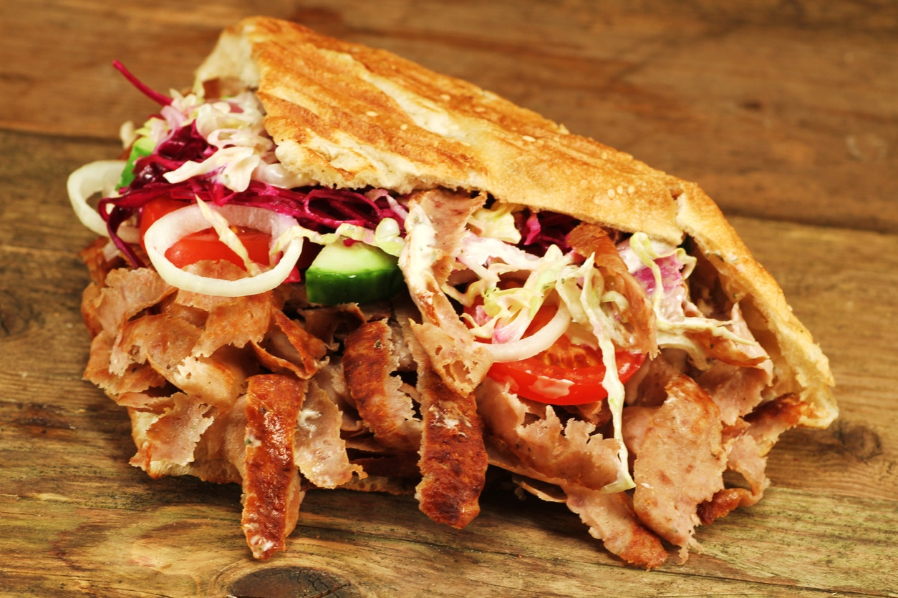

Kebab

Description
A kebab is a popular Middle Eastern and Mediterranean dish that typically consists of small pieces of meat, vegetables, and sometimes fruits that are skewered and grilled or roasted over an open flame.
The meat can be marinated in various spices and sauces to add flavor and tenderness, and the finished dish is often served with flatbread, rice, or salad.
Kebabs can be made with a variety of meats, including beef, lamb, chicken, and fish, and they can be customized with different types of vegetables and sauces to suit individual tastes.
Ingredients
- 2 kg roast beef (top leg), alternatively lamb.
For the marinade
- ½ bulb garlic
- 2 ½ onions
- 2 ½ stalks of mint
- 5 stalks coriander
- 2 ½ tsp paprika powder, noble sweet
- 2 ½ tsp. cumin powder
- 1 ¼ tsp thyme
- 1 ¼ tsp salt
- ½ tsp pepper
- 15 tbsp olive oil
For the bread and filling
- 15 small flatbreads, Turkish, alternatively 4 large ones
- ¼ head white cabbage
- ¼ head red cabbage
- ½ head iceberg lettuce
- 1 large onion, red
- 4 tomatoes
- 1 cucumber
- 300 g feta cheese (white cheese), Turkish (from sheep's or cow's milk)
- n. B. Pul Biber optional, for seasoning
For the orange sauce
- 300 g yogurt, Turkish or Greek
- 250 ml Ayran
- 300 g salad mayonnaise
- 80 ml ketchup
- 1 clove garlic
- 4 tsp sugar
- 2 tbsp. lemon juice
- 4 tsp paprika powder, sweet
- 1 tsp paprika powder, rose hot
- ¼ tsp salt
- ½ tsp. coriander powder
- ½ tsp cumin powder
- 20 g dill
- 10 g parsley, smooth
- 1 tsp powder beaver
Steps
- The lamb or even the roast meat from the top leg of beef is cut into 1 to 2 centimeter thick strips - the butcher of choice will be happy to do the time-consuming paring and pre-cutting. To shape the meat cuts, they then only need to be cut in half and sorted by size. This makes layering easier later.
- To prepare the marinade: To do this, chop all the specified ingredients, add the olive oil and process everything with a blender until you get a mass with a thick consistency.
- Then brush the slices of meat with the marinade and place in a covered bowl, pot or similar in the refrigerator for at least hours to marinate.
- Now layer the meat slices on the rotisserie, arranging them in a cone shape from the bottom to the top peu à peu larger. Now spread the rest of the marinade on the resulting kebab skewer.
Wrapped well in plastic wrap, the skewer can rest in the refrigerator. Possibly the storage of the prepared skewer in the refrigerator is problematic, because it is too large - or the refrigerator is simply too small. In that case, the skewer is made fresh just before preparation.
- The sauces will be all the more delicate if they are allowed to steep in the refrigerator for a night.
In contrast, the filling should be prepared fresh on the day of consumption. The ingredients are placed separately in suitably sized containers so that everyone can create their own individual kebab:
To do this, scoop out the tomatoes and then dice them. Cut the white cheese, red cabbage and white cabbage just like the iceberg lettuce into fine strips, dice the cucumber and cut the onions into rings.
Enjoy your homemade Kebab!